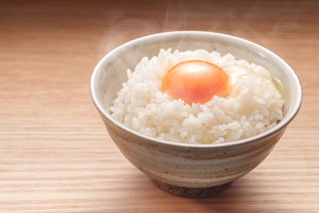

TKG

TKG, or tamagokakegohan, means raw eggs over rice in Japanese. This meal is
incredibly simple and quick to make, and delicious! I eat it for breakfast almost
every day! Here are the instructions of how to make it!
Ingredients
- 1 cup of raw rice
- water
- 3 eggs
- furikake(optional)
- soy sauce(optional)
- kimchi(optional)
Instructions
- Using a rice cooker bowl, add 1 cup of rice using a measuring cup.
- Fill up the bowl with water, then wash the rice, emptying the murky water.
- Repeat step two several times, until the water is clear.
- Fill up the rice bowl with water up to the 1 cup line, then cook the rice.
- When rice is finished cooking, scoop the rice into a bowl.
- crack 3 eggs into the bowl
- add some optional seasonings, like soy sauce, kimchi, or some furikake
- Mix all the ingredients together. You are now ready to enjoy eating some TKG!!
Home